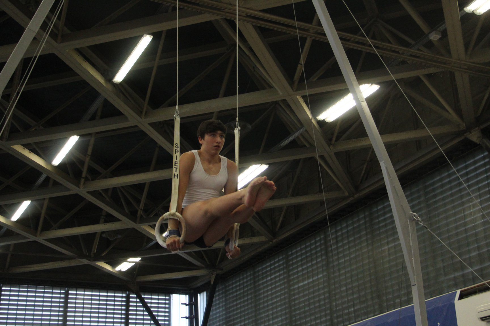
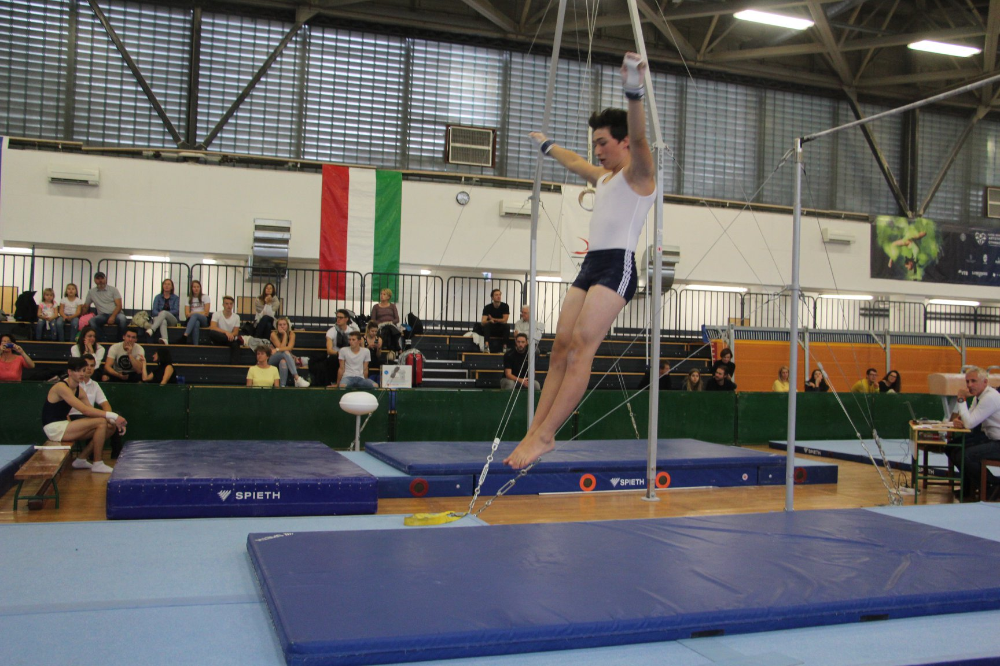
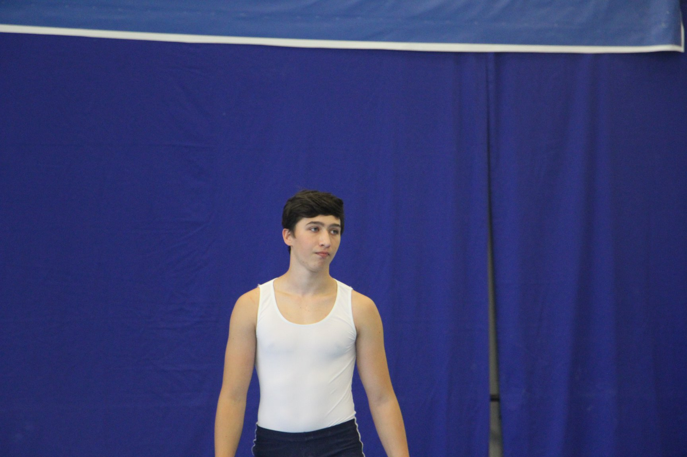
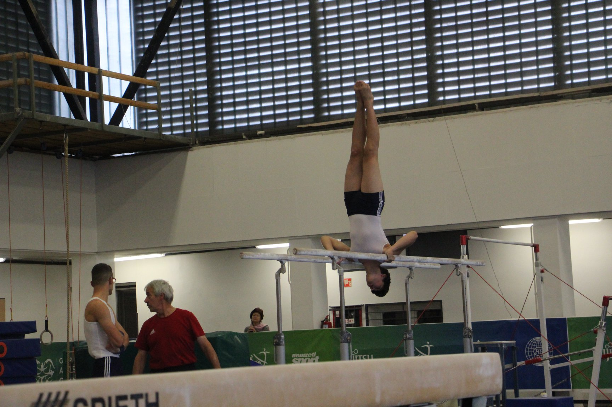
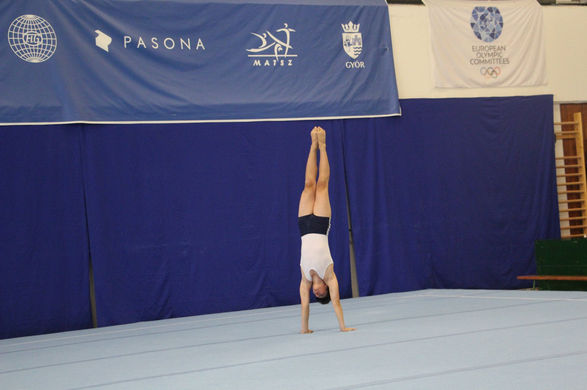
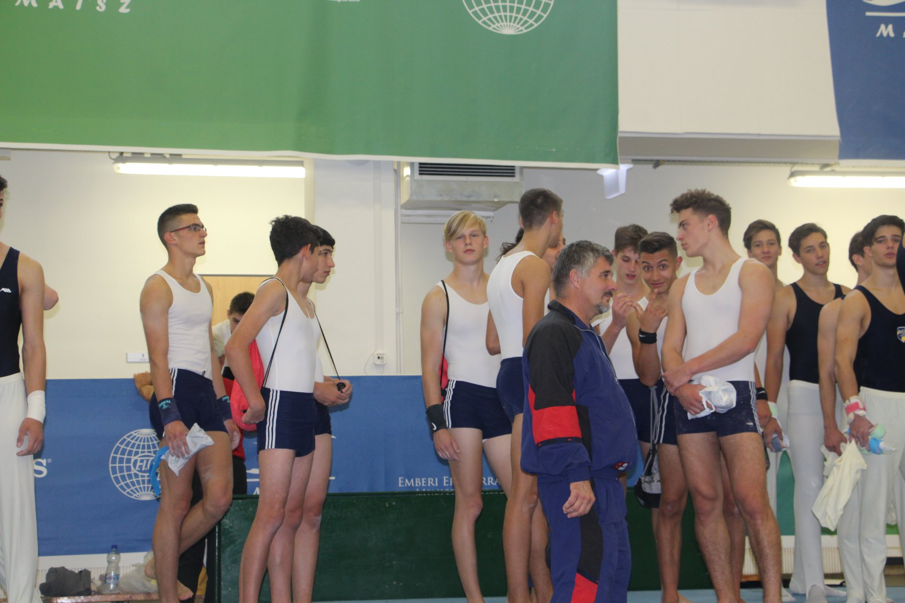

Dezső Norbert
Személyes adatok
- Nevem: Dezső Norbert
- Születési dátumom: 2004.12.18
Elérhetőségeim
Email-ek
- dezson468@gmail.com
- dezsonorbert2004@gmail.com
Iskoláim
Általánosban a Vénkerti Általános Iskola és AMI-ban tanultam.
Most a DSZC Mechwart András Gépipari és Informatikai Technikum-ban
tanulok.
Hobbim
SzertornaEz a 9. évem ebben a sportban. Anno még csak elfoglatságnak tekintettem rá, de már ez megváltozott, hiszen a részemmé vált.
Eleinte 1. osztályban indultam, ami azt foglalja magában, hogy égészen a serdülő korosztályig (12) versenyeztem magasabb szinten. Már sajnos ez nem valósulhat meg, mivel masabbak az elvárások az 1. osztályban, így leszereltem a 2. osztályba amiben már 4. éve tartózkodok.
Legjobb eredményemre nem emlékszem de talén még haladó korosztályban egyéni, országos összesített 4. hely.Az egyesületnek külön Facebook oldala van amin minden korcsoportnak minden versenyét meg lehet teikteni képekkel vagy esetleg videókkal.
Néhány kép egy régebbi versenyről (igen, itt rövid a hajam):
     
Céljaim:
Nem olyan nagy a célom, csak annyit szeretnék elárni, hogy leéretségizzek, megszerezzem a technikumi tanusítványt, és egy munkahelyet szerezni ahol stabil jövedelmet kaphatok.